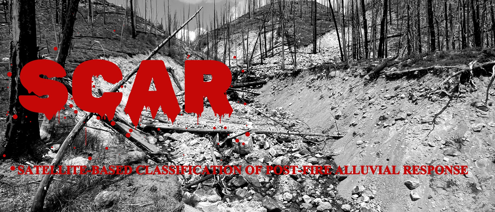

← All projects

SCAR: Satellite-based Classification of post-fire Alluvial Response
For decades, researchers have lamented that risk models for post-fire debris flows are starved of the one thing they need most: an empirical record of when and where debris flows actually happened, and of the storms that triggered them. This ongoing project aims to build that record from remotely sensed data, end to end:
- Find the debris flows. A semantic-segmentation convolutional neural network (YOLO-based) scans the burn scar for the features debris flows leave behind — deposits, scarps — mapping where events occurred. planned
- Date them. At each detected site, a histogram-gradient-boosted decision tree model reads multivariate time series of spectral indices and synthetic-aperture radar and pins down when the flow occurred. in progress
- Explain them. With when and where in hand, each event is attached to its drivers — precipitation, burn severity, terrain, geology — building the empirical training data the field currently lacks. planned
- Learn from the data. A risk model trains on those features to predict what produces debris flows, and under what conditions. planned
- Deploy at burn time. When a new fire burns, the model runs on the fresh burn scar, locally calibrated on older fires nearby — producing hazard estimates grounded in what similar terrain actually did. planned
The interesting challenges so far: rare-event class imbalance, time-aware cross-validation, and keeping iteration fast by pushing the heavy feature engineering server-side in Earth Engine.
Currently building stage 2 of 5 — results and write-up to follow